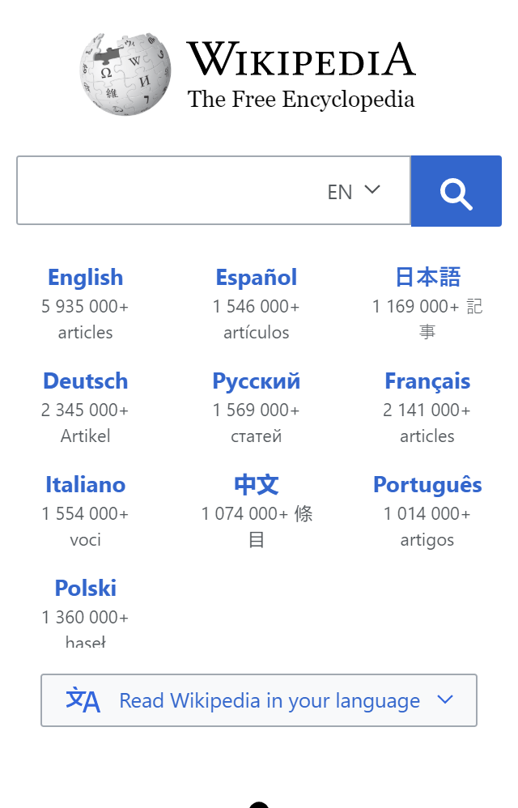
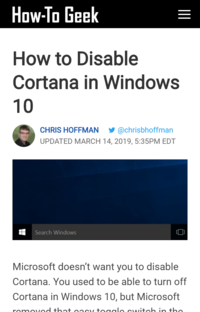

White Space and Clean Design
Wikimedia Foundation
Wikipedia Welcome Page

PARC: Repetition
Kitchn Apartment Therapy
Kitchn: How to Cook Juicy Pork Chops
PARC: Alignment
How-To Geek
How-To Geek: Disabling Cortana
